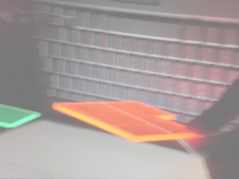

Daniel J Farrell
Research student in the Quantum Photovoltaics Group at Imperial College London
About
I am in the final stages of completing my PhD under the supervision of Prof. Keith Barnham on the 'Characterisation, modelling and development of Luminescent Solar Concentrators'. I will continue to work on Luminescent Concentrators and Quantum Dots in the group at Imperial College over the coming months.
Research Interests
- Photovoltaic cells
- Luminescent concentrators
- Nano-materials:
- Quantum dots and rod
- Organic dyes
- Building integrated photovoltaics
- Thin-film optical coatings
- Thermodynamics of dissipative structures
- Computer modelling
Contact
Mr. Daniel J Farrell
Experimental Solid State Physics
Blackett Laboratory,
Imperial College London,
Prince Consort Road,
London SW7 2AZ.
U.K.
e-mail: daniel.farrell04@imperial.ac.uk
tel: (+44) - (0)20 7995 6678

Luminescent concentrators being illuminated by an uniform light source (conveniently provided by a laptop screen).
Luminescent concentrators
The luminescent concentrator is a non-tracking approach to the concentration of solar energy. One very important feature of the luminescent concentrator is that it collects diffuse light as well as direct. This is significant, especially for high latitudes where the diffuse can account for 60% of the total insolation. The luminescent concentrator aims to reduced the cost-per-watt of generated power. This is achieved by the geometric and photon concentration factors between the top and edge surfaces.
Quantum Dots
Quantum dots are nanoscale crystals of semiconductor materials. One interesting feature of quantum dots is that their optical properties are size dependent. This is because of quantum confinement of the electron and hole wavefunctions. Our group has proposed replacing organic dyes with quantum dots in luminescent concentrators. This has several advantages; emission colour can be changed by changing the particle size, large red-shifts can be produced by controlling the spread in dot sizes and quantum dots should be inherently more stable than organic materials.
Quantum dots also form the basis of many 3rd generation photovoltaics concepts such as; the intermediate band solar and hot carrier solar cells.
Publications
- D J Farrell, A J Chatten, A Büchtemann and K W J Barnham, “Fabrication, Characterisation and Modelling of Quantum Dot Solar Concentrator Stacks”, Proc. IEEE 4th World Conference on Photovoltaic Energy Conversion, (Waikoloa, Hawaii, 2006), p217.
- D J Farrell, A J Chatten, B F Buxton, A Büchtemann, R Danz, M Schleusener, L H Slooff, R Kinderman, A R Burgers, J A M van Roosmalen and K W J Barnham, “The Luminescent Concentrator: Large Area Modelling And Results With Dye Based Stack Concentrators And Thin-Film Composite Plates”, Proc. of the 20th European Photovoltaic Solar Energy Conference, (Barcelona, Spain, 2005), p386.
- D J Farrell, A J Chatten, B F Buxton and K W J Barnham, "Thermodynamic modelling of the Luminescent Solar Concentrator", PVNet-3 UK Conference (Loughborough, UK, 2005).
Collaborative publications
- R Bose, D J Farrell, A J Chatten, A Büchtemann and K W J Barnham, “Luminescent Solar Concentrators”, Proc. Photovoltaic Science Applications and Technology (PVSAT-3), (Durham, UK, 2007), p63.
- A J Chatten D J Farrell, R Bose, M G Debije, A Büchtemann and K W J Barnham, “Thermodynamic Modelling of Luminescent Solar Concentrators with Reduced Top Surface Losses”, abstract accepted: 22nd European Photovoltaic Solar Energy Conference, (Milan, Italy, 2007).
- A J Chatten, D J Farrell, B F Buxton, A Büchtemann and K W J Barnham, “Thermodynamic Modelling of Luminescent Solar Concentrators and Modules”, Proc. of the 21st European Photovoltaic Solar Energy Conference, (Dresden, Germany, 2006), p315.
- A J Chatten, D J Farrell, B F Buxton, A Büchtemann and K W J Barnham, “Thermodynamic Modelling of Luminescent Solar Concentrators and Modules”, Proc. of the 21st European Photovoltaic Solar Energy Conference, (Dresden, Germany, 2006), p315.
- L H Slooff, R Kinderman, A R Burgers, J A M van Roosmalen, A Büchtemann, A J Chatten, D J Farrell and K W J Barnham, “The luminescent concentrator: a bright idea for spectrum conversion?”, Proc. of the 20th European Photovoltaic Solar Energy Conference, (Barcelona, Spain, 2005), p413.
- A J Chatten, D J Farrell, C Jermyn, P Thomas, B F Buxton, A Büchtemann, R Danz, and K W J Barnham, “Thermodynamic Modelling of Luminescent Solar Concentrators”, Proc. 31st IEEE Photovoltaic Specialists Conference, (Orlando, USA, 2005), p82.
Books & chapters
- "New Research on Astrophysics, Neutron Stars and Galaxy Clusters edited by Louis V. Ross", J. Dunning-Davies and D J Farrell, "Universal Constants and Black Holes", p.67-85, ISBN1-59033-784-0 (2003).
Presentations
- “Fabrication, Characterisation and Modelling of Quantum Dot Solar Concentrator Stacks”, IEEE 4th World Conference on Photovoltaic Energy Conversion, (Waikoloa, Hawaii, 2006).
Poster presentations
- "Thermodynamic modelling of the Luminescent Solar Concentrator", PVNet-3 UK Conference (Loughborough, UK, 2005)
- “The Luminescent Concentrator: Large Area Modelling And Results With Dye Based Stack Concentrators And Thin-Film Composite Plates”, Proc. of the 20th European Photovoltaic Solar Energy Conference, (Barcelona, Spain, 2005)
Updated: 22th September 2008